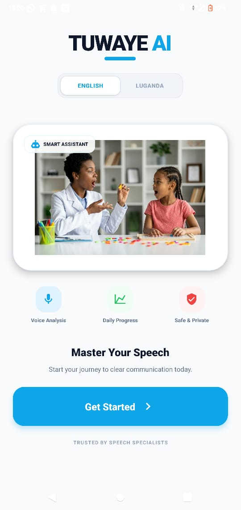

Tuwaye AI
An inclusive speech-technology startup for people with speech and communication difficulties. Combines speech recognition and analysis, multilingual support, personalised exercises and remote caregiver or therapist monitoring. Part of MIIC Startup Hatch 1.0.